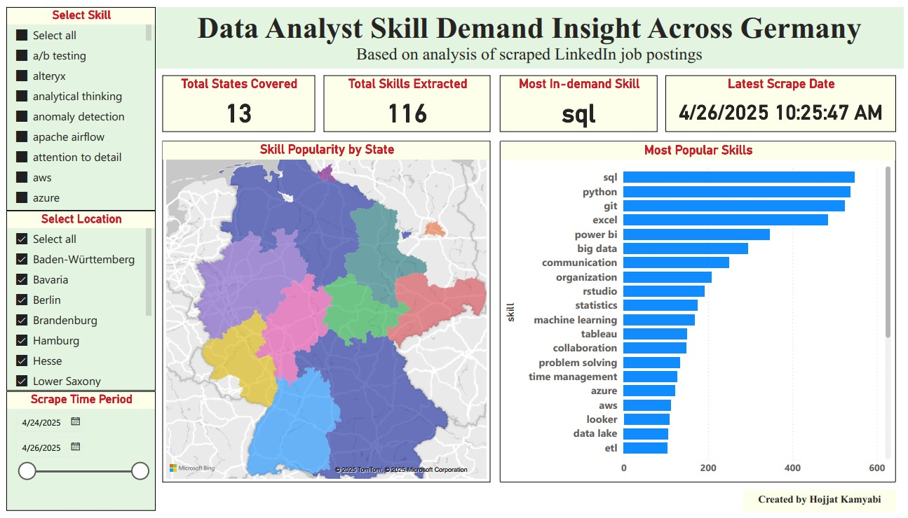

Job Skill Trends Analysis Across Germany
Github Repository

Overview
This project uses Python, web scraping, Airflow, PostgreSQL, and Power BI to collect and analyze job postings from LinkedIn and extract the most in-demand skills by city across Germany.
Overview
Job Skill Trends Analysis is an end-to-end data analysis project that identifies the most in-demand technical skills across different cities and states in Germany. Using real job postings scraped from LinkedIn, the project automatically extracts job descriptions, identifies key skills, and visualizes them on an interactive dashboard. The goal is to help users understand which cities
require which skills most — valuable insight for job seekers, recruiters, and analysts.
Tools & Technologies Used
Web Scraping: Python, BeautifulSoup, Selenium
Data Workflow Orchestration: Apache Airflow (Dockerized)
Containerization: Docker, Docker Compose
Data Storage: PostgreSQL
Skill Extraction: Regex and rapidfuz
Dashboarding: Power BI
Key Features
Automated Pipeline: Uses Apache Airflow to schedule scraping and processing tasks. Each job posting is fetched, cleaned, and stored in PostgreSQL automatically.
Skill Extraction: Utilizes regex and rapidfuz to identify and extract relevant skills from job descriptions, ensuring accurate and efficient data processing.
Data Visualization: Dashboard built in Power BI, connected directly to the PostgreSQL database. Hovering over a region reveals: Most requested skill, Count of that skill.